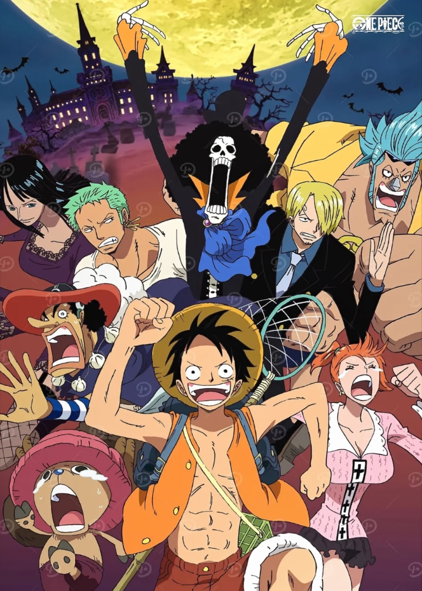
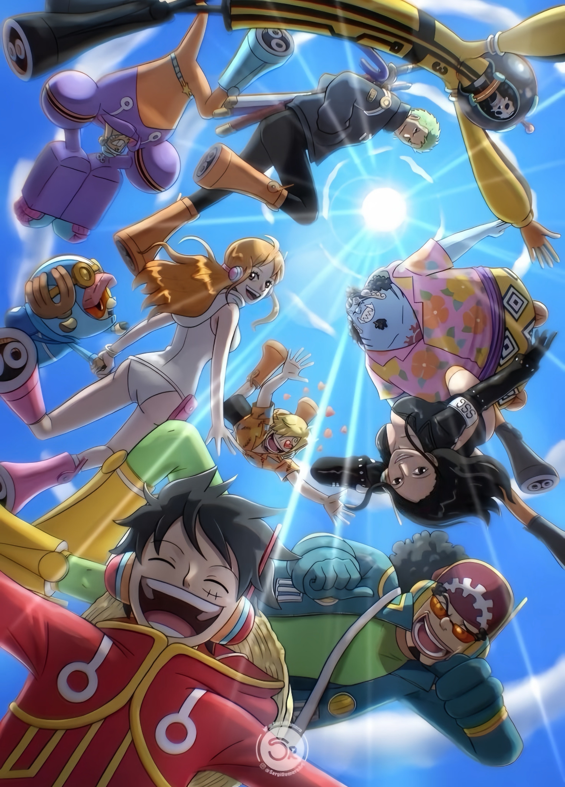
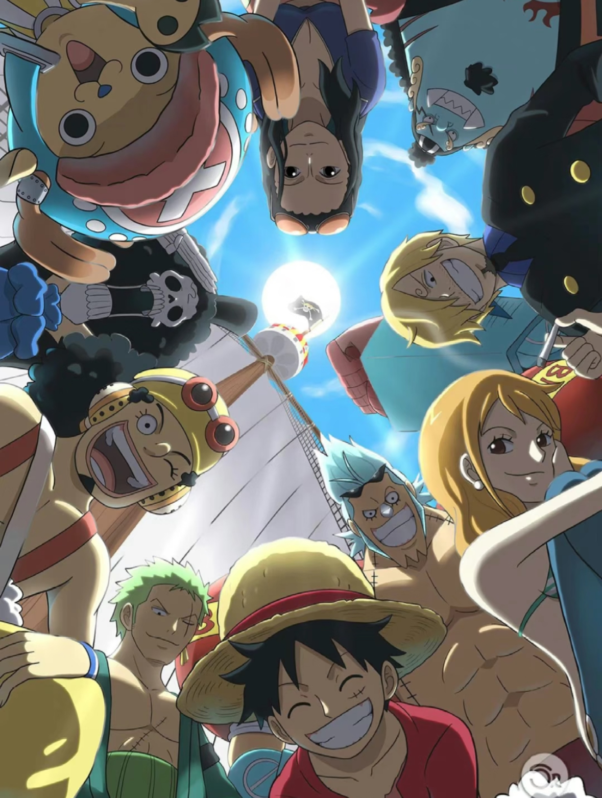

《海贼王》（ONE PIECE）是尾田荣一郎创作的长篇少年热血漫画，1997年开始在《周刊少年Jump》连载，衍生出动画、剧场版、游戏等海量IP内容，长期稳居全球漫画销量前列。
故事围绕蒙奇·D·路飞展开，他误食橡胶果实获得橡胶身体的能力，17岁出海立志成为“海贼王”。他集结了一群性格鲜明、目标坚定的伙伴，组成草帽一伙，共同航行在伟大航路，寻找传说中海贼王哥尔·D·罗杰留下的宝藏“ONE PIECE”。

冒险途中，草帽一伙不仅要对抗海军、七武海、四皇等强大势力，还要揭开空白的100年历史、古代兵器、D之一族的秘密等核心谜团。作品以“伙伴情谊”为核心，融合热血战斗、搞笑日常与深刻的世界观，传递“永不放弃梦想”的信念，塑造了路飞、索隆、娜美等深入人心的角色，成为一代漫迷的经典回忆。
